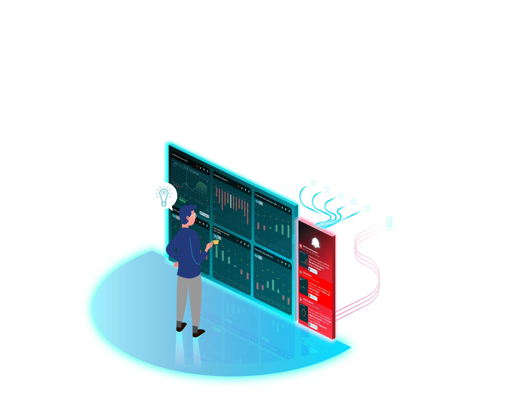
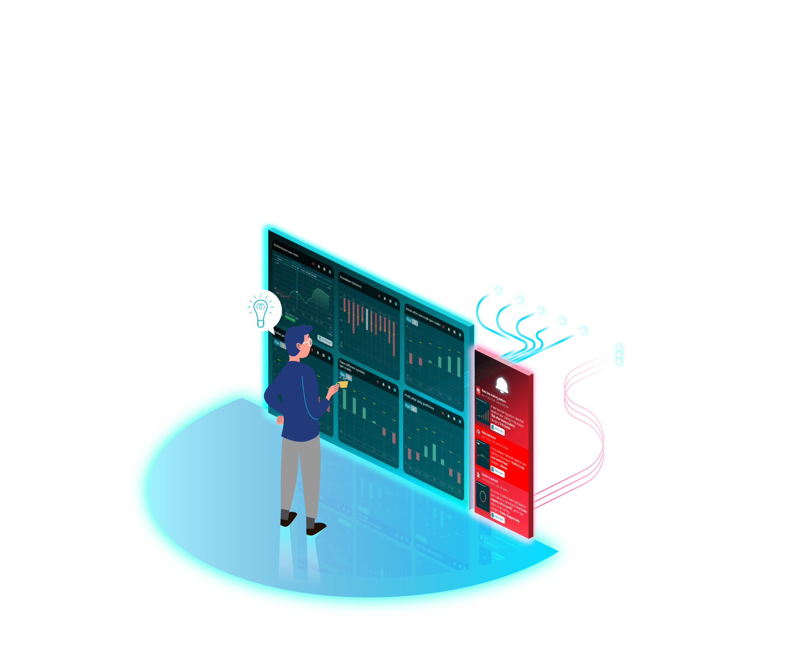

Successful trading is about managing your psychology, not predicting the markets
Once we realize that imperfect understanding is the human condition, there is no shame in being wrong, only in failing to correct our mistakes
You have to identify your weaknesses, and work to change. [...] Look for repetitive patterns of success and failure


 
